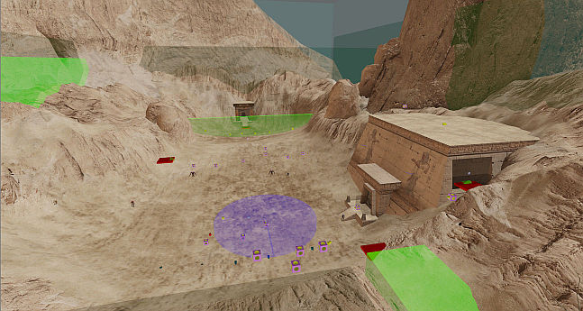
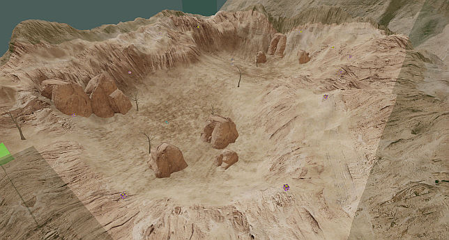
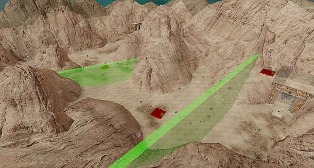

Sand Canyon (100%)¶
Route¶
Data (Tourist)¶
Enemies: 84
Secrets: 6
Starting Area¶

- 1: Kamikaze - Touch field
- 2-19: Kill #1
- 3 * 6 Kamikazes
- 20-24: Pre-existing
- 2 Gnaars, 2 Rocketeers, 1 Firecracker
- 25: Kleer - Kill 2 Gnaars from #20-24
Secret 1: Hidden valley - Touch field
Secret 2: Secret room - Touch field
Hidden Valley¶

- 26-37: Collect bullet (4) and rocket ammo (2)
- 12 * 1 Kamikazes [2 second interval]
Indoor Area¶
- 38: Kleer - Collect small health
- 39-42: Touch field
- 3 Kamikazes, 1 Rocketeer
- 43: Firecracker - Pre-existing
- 44-61: Kill 3 Kamikazes from #39-42
- 3 * 6 Marsh Hoppers [4 second delay, 1.5 second interval]
- 62-65: Pre-existing
- 2 Gnaars, 1 Rocketeer, 1 Firecracker
- 66: Gnaar - Touch field
- 67: Rocketeer - Pre-existing
Secret 3: Secret depot - Touch field
Secret 4: Secret armor - Collect armor
Secret 5: Secret hole - Touch field
Ending Area¶

- 68-70: Pre-existing
- 2 Rocketeers, 1 Bomber
- 71-73: Touch field
- 2 * 1 Rocketeers, 1 Bull
- 74: Rocketeer - Collect extra small health
- 75-79: Touch field
- 3 * 1 Rocketeers [1 second delay, 2 second interval]
- 1 Rocketeer
- 1 Minor Biomechanoid
- 80-84: Collect extra small health
- 5 Gnaars
Secret 6: Secret place - Touch field